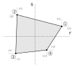
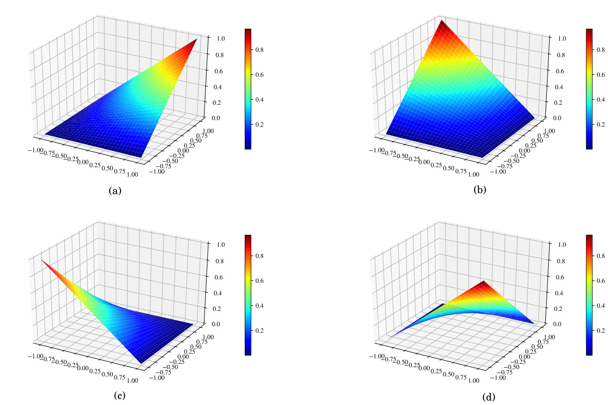

Elemento quadrilateral
O elemento quadrilateral padrão que usaremos é o isoparamétrico bilinear de 4 nós com 2 unidades de comprimento nos lados.

Funções de interpolação
As funções de interpolação utilizadas serão as bilineares Lagrangenas (derivadas por poliônimos de Lagrange), afinal temos 4 nós por elemento. A interpolação dos deslocamentos no domínio segue a escolha dos polinômios de acordo com a quantidade de nós do elemento, no nosso caso n = 4, com o auxílio do triângulo de Pascal para polinômios.
Assim podemos escrever a interpolação do campo de deslocamentos u na direção de r e deslocamentos v na direção de s do elemento do estado plano como:
Observe que os mesmos coeficientes serão utilizados por ambas as direções, pois iremos utilizar as mesmas funções de interpolação para ambos os graus de liberdade do nó.
Sabemos que no elemento padrão, para cada nó, o valor desses polinômios deve ser o valor do respectivo grau de liberdade. Substituindo r e s pelas coordenadas de cada nó do elemento padrão e igualando aos graus de liberdade (vamos fazer somente para o campo dos deslocamentos u pois o campo v vai utilizar as mesmas funções de interpolação):
Note que cada linha representa um nó do elemento padrão com suas coordenadas substituídas no polinômio de interpolação. Os valores dos coeficientes A, B, C, D dos polinômios são encontrados resolvendo-se o sistema acima, que resultam em:
Substituindo os valores desses coeficientes nas equações $\ref{eq:campoDeslocamentosU}$ e $\ref{eq:campoDeslocamentosV}$:
Isolando o deslocamento de cada grau de liberdade na equação acima:
Ou, na forma matricial:
Ou:
E portanto, as funções de forma para o elemento bilinear de 4 nós são:

Deformações
Certo, mas as nossas funções de interpolação não são função de x-y, são função de r-s. Verdade, mas para o cálculo das deformações precisamos das derivadas das funções de interpolação em x-y apenas e isso sabemos como fazer, utilizando o Jacobiano conforme visto na fundamentação. O Jacobiano para o elemento quadrilateral de 4 nós é:
Sendo $x_1$, $y_1$ ... $x_4$, $y_4$ as coordenadas dos nos do elemento na estrutura. Após a obtenção da inversa do Jacobiano, calculamos as derivadas das funções de interpolação em x-y da seguinte forma:
A matriz $\textbf{B}$ não será diretamente calculada, mas sim montada com os resultados acima de acordo com o operador diferencial $\boldsymbol{\partial}$ para a determinação correta das deformações. A matriz é preenchida com as corretas derivadas das funções de interpolação em x-y e resulta em:
Determinação da matriz de rigidez do elemento
Conforme derivado na fundamentação, a matriz de rigidez do elemento é obtida pela equação:
Com $\textbf{D}$ o tensor constitutivo do estado plano de tensões ou deformações conforme aplicável e será resolvida pela quadratura de Gauss.
A integração numérica pela quadratura de Gauss é feita utilizando dois pontos de Gauss por direção para o elemento quadrilateral de 4 nós, pois com essa quantidade é possível integrar de modo exato um polinômio de até grau 3, o suficiente para o grau de nossas funções de interpolação.

As coordenadas e os pesos desses pontos para o elemento padrão em específico da imagem são mostrados na tabela abaixo:
| Ponto de Gauss, $P_i$ | Coordenadas de cada ponto de Gauss r, s | Peso, $W_i$ |
|---|---|---|
| $P_1$ | $ \dfrac{1}{\sqrt{3}}$, $ \dfrac{1}{\sqrt{3}}$ | 1 |
| $P_2$ | $-\dfrac{1}{\sqrt{3}}$, $ \dfrac{1}{\sqrt{3}}$ | 1 |
| $P_3$ | $-\dfrac{1}{\sqrt{3}}$, $-\dfrac{1}{\sqrt{3}}$ | 1 |
| $P_4$ | $ \dfrac{1}{\sqrt{3}}$, $-\dfrac{1}{\sqrt{3}}$ | 1 |
Observe que precisamos resolver uma integral tripla para calcular a matriz de rigidez. Neste caso nos iremos manter a espessura constante em todo o elemento. Sendo assim, a integral na direção z é a própria espessura.
Poderia ser simplificadamente variável
Na verdade, como vamos utilizar a quadratura de Gauss para integração, essa espessura poderia ser variável em cada ponto de Gauss sem modificar a integração numérica, sendo que cada parcela da somatória em cada ponto de Gauss deverá ser multiplicada pela respectiva espessura.
Portanto, com a espessura constante $t$, podemos rescrever as integrais da matriz de rigidez e do vetor de forças nodais equivalentes como:
Agora precisamos escrever essas integrais na forma de um somatório nos pontos de Gauss das derivadas das funções de interpolação avaliadas nesses pontos de Gauss multiplicadas pelos respectivos pesos. Só não podemos esquecer de multiplicar também delo determinante do Jacobiano para corrigir a distorção da área, já que estamos integrando no elemento padrão. Portanto, aplicando o conceito da integral numérica da quadratura de Gauss na integral da matriz de rigidez, temos que:
O procedimento para a obtenção da matriz de rigidez do elemento do estado plano para cada ponto de Gauss:
- Calcular as derivadas das funções de interpolação no r-s substituindo cada coordenada r e cada coordenada s pelas respectivas coordenadas de no ponto de Gauss;
- Determinar o Jacobiano com a equação $\ref{eq:jacobiano}$ em função das coordenadas do elemento da estrutura e das derivadas das funções de interpolação nos pontos de Gauss;
- Calcular as derivadas das funções de interpolação no x-y usando a equação $\ref{eq:derivadasNxy}$, função do inverso do Jacobiano e das derivadas das funções de interpolação nos pontos de Gauss;
- Distribuir as derivadas das funções de interpolação no x-y calculadas, na matriz $\textbf{B}$ de acordo com a equação $\ref{eq:B}$;
- Determinar o tensor constitutivo $\textbf{D}$ para o estado plano de tensão ou deformação, o que se aplicar;
- Calcular a parcela relativa ao ponto de Gauss em questão de acordo o somatório da equação $\ref{eq:calculoke}$.
Repetir todo o procedimento de 1 a 6 para cada ponto de Gauss para a obtenção de $\textbf{k}_e$.
Determinação do vetor de forças nodais equivalentes
O vetor de forças nodais equivalentes foi derivado também na fundamentação e é calculado pela equação:
Observe que também na carga distribuída estamos considerando a integral em z constante.
A integração do vetor de cargas nodais equivalentes segue o mesmo princípio, porém vamos fazer em separado as cargas de corpo e as distribuídas para tratar especificamente cada integração.
Carga de corpo
Em relação a carga nodal equivalente de corpo, relativa ao peso próprio, transformamos a integral em somatória da mesma forma que fizemos na matriz de rigidez do elemento, ou seja:
Lembrando de usar o determinante do Jacobiano para corrigir a área do elemento e lembrando que $\boldsymbol{\gamma}$ são os pesos específicos (força por volume) definidos para as direções x e y.
É de certa forma óbvio não ter valores de peso específico na direção x, afinal a gravidade é vertical para baixo. Porém, essa consideração também pode ser utilizada para cargas inerciais causadas por velocidades angulares constantes, aplicadas em uma análise simples, para um instante específico do movimento.
Carga distribuída
A carga distribuída também será integrada com a quadratura de Gauss. Porém, existe a necessidade de avaliar as funções de interpolação sobre a aresta do elemento que está carregada.
As funções de interpolação precisam ser avaliadas nas coordenadas r-s respectivas ao local de aplicação da carga distribuída no elemento da estrutura em x-y, independente de sua distorção na estrutura já que as arestas sempre permanecerão retilíneas. Por exemplo, se a carga estiver aplicada na aresta superior do elemento da estrutura a integral será em r ($l \equiv r$ e as coordenadas dos pontos de Gauss utilizadas são as em r) e $s = 1$. Se estiver aplicada na aresta da esquerda do elemento da estrutura, por exemplo, a integral será em s ($l \equiv s$ e as coordenadas dos pontos de Gauss utilizadas são as em s) e $r = -1$.
O Jacobiano de transformação da aresta para corrigir o seu comprimento $\textbf{J}_l$ é bem mais simples, sem a necessidade de usar o mesmo Jacobiano da matriz de rigidez. Sabemos que no sistema r-s todas as arestas do elemento tem o tamanho de 2 e que esse tamanho será transformado para um comprimento $L_a$ da aresta do elemento da estrutura. Então, a transformação do r-s para o x-y da aresta é (usando a direção r e x como exemplo):
E, sua "matriz" Jacobiana:
Portanto, basta calcular o comprimento da aresta do elemento da estrutura que se está aplicando o carregamento, função dos nós inicial ($x_i$, $y_i$) e final ($x_i$, $y_i$) da aresta do elemento da estrutura,
e podemos rescrever o vetor de força nodal equivalente como:
A rotação da aresta do elemento da estrutura relativa ao elemento padrão é irrelevante, pois os valores da carga distribuída $\textbf{g}$ já estão definidos em x-y:
Além disso, os elementos do estado plano somente se distorcem nunca rotacionam e os graus de liberdade do elemento padrão e do elemento da estrutura sempre tem a mesma direção. Portanto, somente precisamos do comprimento dessa aresta corrigido para calcular o vetor de forças nodais equivalentes das cargas distribuídas em uma aresta do elemento aplicadas nas direções x, $g_x$ e y, $g_y$.
Assim completamos a teoria do elemento quadrilateral, agora vamos ao triangular com deformações constantes.